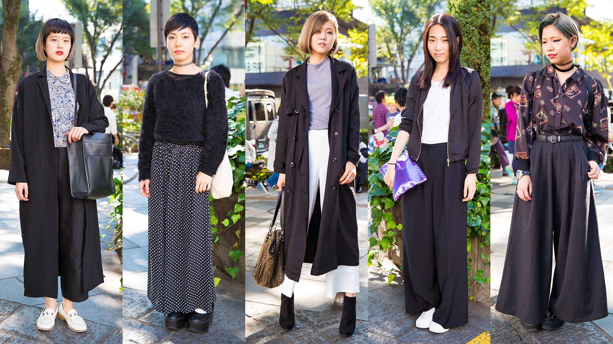
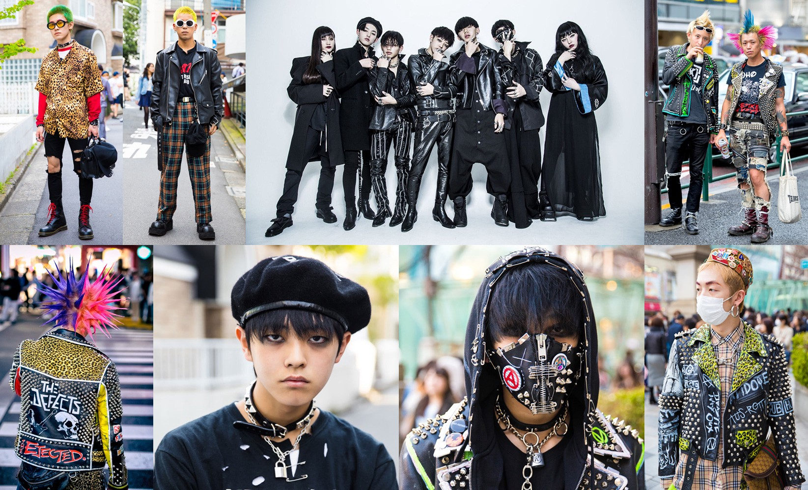
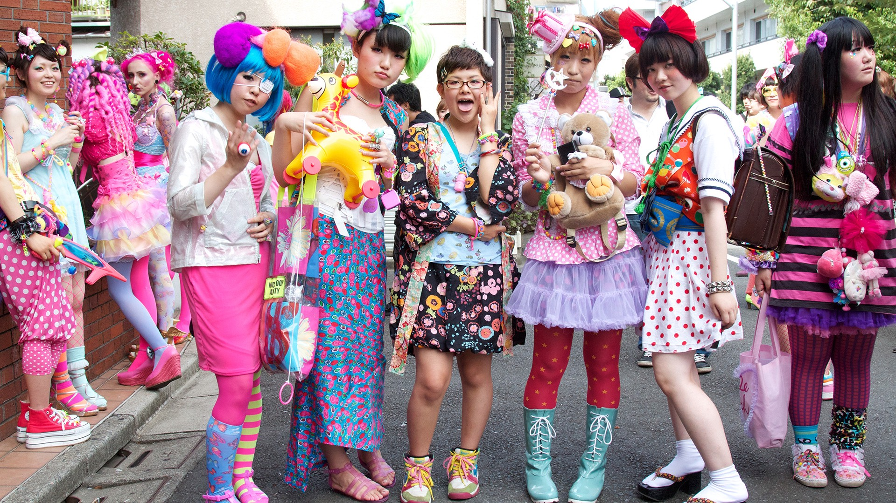

The streetwear in Shibuya is nothing short of amazing. Everywhere you walk feels like a fashion show. My sense when I was there was that appearances matter, moreso than in the US. You rarely ever see anyone in sweats, unless it's part of their fashion statement. For better or for worse, everyone always looked put together and nowhere was that more apparent than in Shibuya, an eclectic mix of Japanese style subcultures.
Some of my favorite looks:



I highly encourage you to wander around the side streets of Shibuya. Down these winding roads you'll often find many smaller unique boutique stores that are literally off the beaten path.